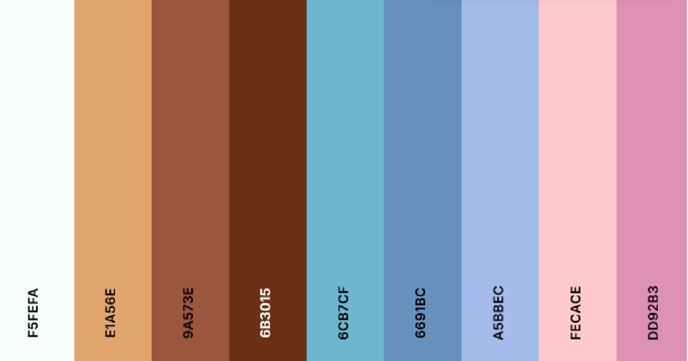

Color Palette
These are the colors I chose to use in my website:
Box Model
The CSS box model is a fundamental concept that defines how elements are displayed on a webpage. It consists of four main components: content, padding, border, and margin. The content is the innermost part where text and images are placed. Padding adds space between the content and the border, while the border surrounds the padding and content. Finally, the margin provides space between the element and other elements on the page. By adjusting these properties, I can control the spacing, alignment, and overall layout of elements in my design.
The box model for my table has the following features:
- Margin: 20px on the top and bottom, 695.150px on the sides. The `20px` top and bottom margin comes from `margin: 20px auto;`, and the large side margin is due to the table being centered with `auto`.
- Border: The border is set to 6px in the CSS, but the box model shows it as 4.8px due to browser rendering adjustments.
- Padding: There is no padding for the table itself. I only applied Padding to the `th` and `td` elements.
- Content: The content area of the table is 513.675px wide and 196.800px tall, determined by the content inside the table, as the width is set to `auto`.